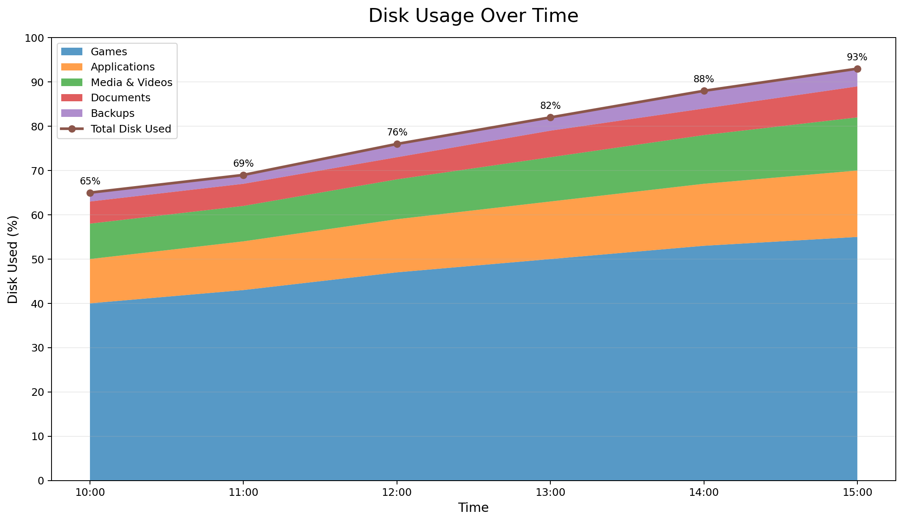
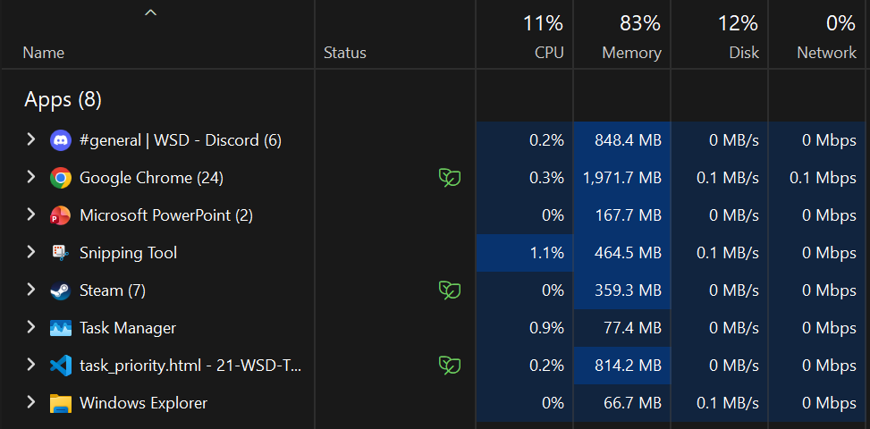

<!DOCTYPE html>
<html lang="en">

<head>
    <meta charset="UTF-8">
    <meta name="viewport" content="width=device-width, initial-scale=1.0">

    <title>WSD App/title>

    <link rel="stylesheet" href="../css/style.css">
    <link rel="icon" type="image/png" href="../assets/img/konpyuuta.png">
    
<link rel="preconnect" href="https://fonts.googleapis.com">
<link rel="preconnect" href="https://fonts.gstatic.com" crossorigin>
<link href="https://fonts.googleapis.com/css2?family=Roboto+Slab:wght@100..900&display=swap" rel="stylesheet">
</head>

<body>
    <div>
        <h1>Wise Stroage Director</h1>
    </div>

    

    <div>
        <ul>
            <li>
                <p><a href="index.html">Main Dashboard</a></p>
            </li>
            <li>
                <p><a href="task_priority.html">Task Priority</a></p>
            </li>
            <li>
                <p><a href="stats.html">Disk Usage Statistics</a></p>
            </li>
            <li>
                <p><a href="about.html">About</a></p>
            </li>
            <li>
                <p><a href="settings.html">Settings</a></p>
            </li>
            <li>
                <p><a href="authors.html">Group Info</a></p>
            </li>
        </ul>
    </div>

    <div class="box-container">
        <div class="box">

            <div id="graph">
                <h2>Disk Usage Over Time</h2>
                
            </div>

            <button id="show-button">Refresh Stats</button>
        </div>

        <div class="box">
            <h3>Storage Performance</h3>

            <p>Real-time I/O: <strong>125 MB/s</strong></p>
            <p>Current IOPS: <strong>4,280</strong></p>
            <p>Active Processes: <strong>8</strong></p>
            <p>Files Accessed: <strong>342</strong></p>

            <h4>Optimization History</h4>
            <p>IOPS Before: <strong>2,950</strong></p>
            <p>IOPS After: <strong>4,280</strong></p>
            <p>IOPS Gained: <strong>+1,330</strong></p>
            <p>Time Saved: <strong>1.8 seconds</strong></p>
        </div>
    </div>

    <div class="box-container">
        <div class="text-input-container">
            <label for="process-search">Search for Process:  </label>
            <input type="text" id="process-search" name="process-search" placeholder="Enter process name...">
        </div>
    </div>

    <div class="box-container">
        <div class="box">
            
        </div>

        <div class="box">
            <h3>Average Process Statistics</h3>

            <p>Average CPU Usage: <strong>4.7%</strong></p>
            <p>Average Memory Usage: <strong>182 MB</strong></p>
            <p>Average Read Rate: <strong>18.4 MB/s</strong></p>
            <p>Average Write Rate: <strong>7.2 MB/s</strong></p>
            <p>Average IOPS: <strong>620</strong></p>
            <p>Average I/O Wait: <strong>2.3 ms</strong></p>
            <p>Average Process Runtime: <strong>14.8 min</strong></p>
            <p>Active Processes: <strong>37</strong></p>
        </div>
    </div>
    <script type="module" src="../js/ui.js"></script>
</body>
</html>